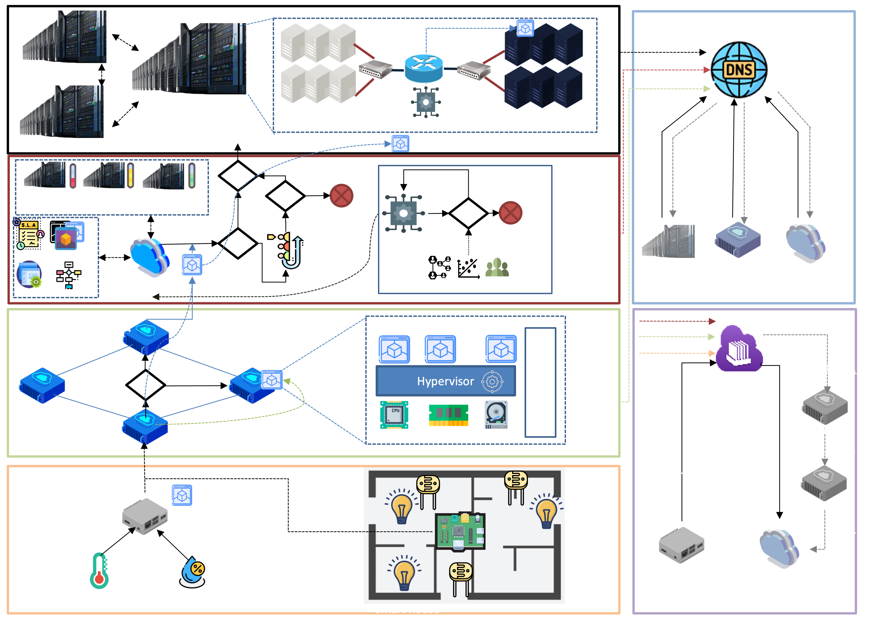

Architecture
Four-layer hierarchical model for fog computing
Overview
Simcan2Fog implements a hierarchical four-layer architecture designed to model realistic fog computing environments. This architecture spans from IoT edge devices at the bottom to cloud data centres at the top, with intermediate fog and cloud provider layers that orchestrate resource management, task offloading, and service deployment.

Simcan2Fog Four-Layer Architecture
💡 Key Principle
The architecture decentralizes computational capacity by bringing it closer to IoT devices, significantly reducing latency and alleviating the load on cloud system resources. Each layer can make autonomous decisions about workload placement based on resource availability and application requirements.
Architecture
Layer 1: IoT Layer
Edge Devices & Controllers
The foundation layer of the fog computing hierarchy
The IoT layer consists of edge devices such as sensors, actuators, and controllers. Each edge user represents a distinct IoT scenario (e.g., smart home, irrigation system, industrial equipment).
Components:
- Sensors: Collect environmental data (temperature, humidity, luminosity, etc.) with parameterizable period, value, and unit
- Actuators: Execute physical actions in response to commands (smart bulbs, valves, motors, etc.)
- Controllers: Modelled as reduced compute nodes that preprocess sensor data and coordinate edge operations
⚙️ Controller Responsibilities
The controller module is responsible for:
- • Receiving and preprocessing information from local sensors
- • Running selected applications to process IoT data
- • Deciding when to request service deployment to upper layers
- • Coordinating actuator responses based on processing results
Layer 2: Fog Layer
Fog Nodes Mesh
Distributed compute layer with intelligent routing
The fog layer forms a mesh of interconnected fog nodes, each being a compute node equipped with routing, virtualization, and storage capabilities. This layer provides the critical middle ground between resource-constrained edge devices and distant cloud data centres.
Capabilities:
- Routing: Full IP routing capabilities to forward traffic between IoT devices and cloud infrastructure
- Virtualization: Can host VMs and containers to run services closer to edge devices
- Storage: Local storage for caching data and reducing cloud bandwidth requirements
- Decision Making: Autonomous decisions on local processing vs. cloud offloading based on resource availability
Request Processing Flow
When a fog node receives a request from the IoT layer:
- Evaluate local capacity: Check if resource requirements fit within current available capacity
- Handle locally if possible: Deploy service on the fog node to minimize latency
- Forward to mesh peer: If local resources insufficient, try another fog node in the mesh
- Escalate to cloud: If fog layer saturated, forward request to cloud provider layer
Layer 3: Cloud Provider Layer
Resource Orchestration
Inherited from Simcan2Cloud simulator
The cloud provider layer orchestrates the core infrastructure.
A dedicated CloudProvider manager
maintains a resource map of available data centres and their occupancy, balancing incoming requests
according to configurable placement policies.
Responsibilities:
-
1.
VM Deployment Processing:
Receives and validates VM deployment requests from fog nodes or edge users
-
2.
Data Centre Assignment:
Assigns requests to suitable data centres using placement policies (first-fit, best-fit, etc.)
-
3.
Queue Management:
Maintains queues of user subscriptions awaiting resource availability
-
4.
Pricing Policies:
Defines and enforces pricing policies per VM type
-
5.
Infrastructure View:
Maintains consistent internal state through events emitted by system nodes
👥 Cloud User Generator
This layer also integrates a cloud user generator component that produces realistic, infrastructure-oriented workloads. It's configurable in terms of user characteristics and arrival patterns (VM types, SLAs, applications), enabling researchers to model various usage scenarios and load patterns.
Layer 4: Data Centre Layer
Data Centre Infrastructure
Detailed hardware modelling with hypervisor management
At the top of the architecture, the data centre layer receives and manages requests from the cloud provider. The data centre consists of a DC manager and multiple compute and storage nodes grouped into blades.
Hardware Modelling:
Each compute node is modelled in detail with realistic specifications:
- • CPU cores: Number and frequency (MIPS per core)
- • Scheduler type: CPU scheduling policies for VM workloads
- • Instructions per tick: Fine-grained computation simulation
- • Memory capacity: RAM available for VMs
- • Storage size: Disk capacity and I/O throughput
- • Network interfaces: Bandwidth and latency characteristics
DC Manager
The DC Manager is responsible for:
- • Resource management: Tracking available resources across all compute nodes
- • Node selection: Assigning most suitable storage and compute nodes for each request
- • Selection strategy: Customizable through configurable selection strategies
- • Blade coordination: Managing resource allocation within and across blade units
⚡ Hypervisor
The internal coordinating element of the blades is the Hypervisor, which oversees various aspects of the lifecycle of VMs and their associated applications. This includes VM creation, startup, migration, shutdown, and resource allocation enforcement.
Infrastructure Services
To enable seamless interaction across all Simcan2Fog layers, the platform provides two critical infrastructural services that operate horizontally across the entire architecture:
Message Queue
Topic-based publish/subscribe communication backbone
The Message Queue acts as a communication backbone, decoupling producers and consumers and mediating message delivery among modules. Inspired by RabbitMQ and MQTT, it implements topic-based routing.
- • Publishers: Emit messages to specific topics
- • Subscribers: Receive all messages from subscribed topics
- • Transparent routing: Addressing and delivery handled automatically
- • Decoupling: Components don't need to know about each other directly
Learn more: See the detailed Message Queue documentation for implementation details and usage examples.
Domain Name System (DNS)
Name resolution and service discovery
The DNS server provides name resolution and service discovery, resolving service identifiers to IP addresses on demand. It supports both hierarchical resolution (following RFC 1034/1035) and simplified direct lookup.
- • A records: Address (IPv4) resolution
- • CNAME: Canonical name aliases
- • NS records: Name server delegation
- • MX records: Mail exchange routing
- • Recursive resolver: With caching for improved performance
Architectural Benefits
🎯 Realistic Fog Modelling
Multi-tier architecture accurately reflects real-world fog deployments, from IoT edge to cloud data centres.
📊 Detailed Metrics
Layer-by-layer monitoring enables precise analysis of latency, resource usage, energy consumption, and QoS.
🔀 Flexible Offloading
Dynamic workload placement across fog and cloud layers based on resource availability and policies.
🌐 Full Network Simulation
INET integration provides detailed network behaviour including routing, congestion, and protocol modelling.
⚙️ Modular Design
OMNeT++ modularity allows easy extension with custom fog strategies, devices, and algorithms.
☁️ Cloud Integration
Inherited Simcan2Cloud features provide sophisticated virtualisation, SLAs, and cloud provider policies.
Ready-to-Run Examples
Simcan2Fog includes several showcase scenarios in the showcases/ directory:
🏠 Smart Home (IoT)
Complete smart house with sensors, actuators, and fog gateways. Demonstrates IoT data collection and processing.
showcases/iot/
🏢 Data Centre
VM provisioning, service deployment, and cloud-to-edge communication patterns.
showcases/Datacentre/
🔗 Proxy & DNS
Demonstrates proxy module functionality with optional DNS integration for service discovery.
showcases/Proxy/
📊 Statistics
Statistical capture, event recording, and sequence diagram generation for analysis.
showcases/Statistics/
Learn More
For detailed technical specifications and experimental results, refer to the official Simcan2Fog publication in SoftwareX (2025).